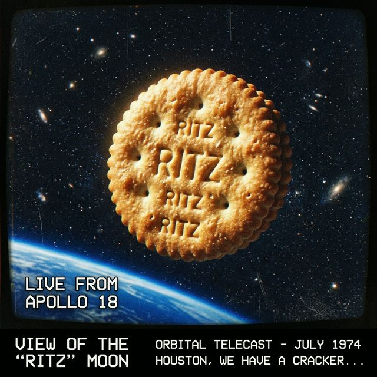

Effective immediately. Commerce Department reports “scheduling concerns.” Calendar industry in emergency session.
Member states agreed the situation “warrants attention.” Which situation was not specified. Resolution passed 142–3 with 11 abstentions and one country that sent a casserole.
All items listed as “[SEE ATTACHMENT C].” Attachment C has not been located.
The press office released a statement containing the word “categorically” five times and no verifiable facts.
Aides confirm the duck had no comment. Senator’s office says the duck was “a private citizen.”
117 minutes. Inconclusive. The director has strong opinions about cargo pants.
You found this unsettling. You were right to.
Three-song EP. One song is a 14-minute silence. The other two are the same song played in different keys.
Federal enumerators described the encounter as “hostile but not unprecedented.” Seven clipboards were lost.
The Appalachian Somber Hen has been observed staring into the middle distance since its identification in February. Egg production is described as “resigned.”
— Name Withheld, Flagstaff. [Editors’ note: We all have questions about the rooster.]
Nixon Chicken is published quarterly by Antigravity Concerns LLC. All events, persons, and poultry depicted herein are fictional. Any resemblance to actual geese, living or honking, is entirely coincidental and frankly alarming. © 2026 Nixon Chicken Magazine. Do not attempt to feed the journalists.